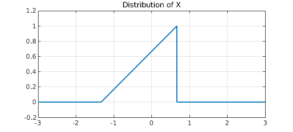
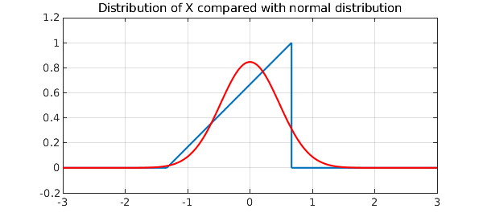
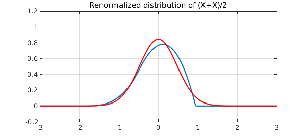
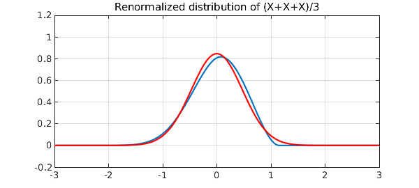
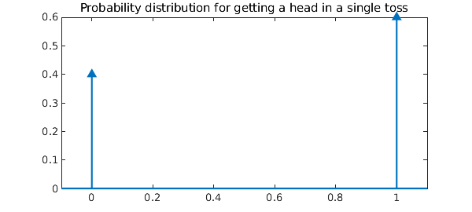
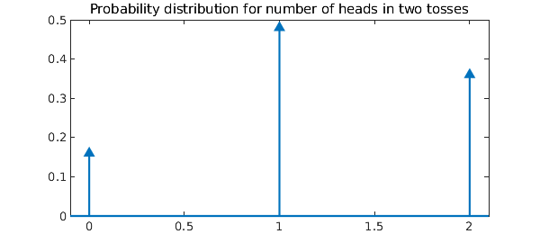
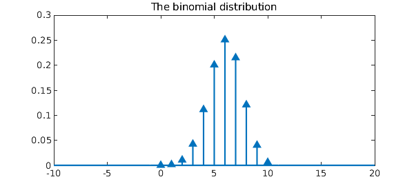
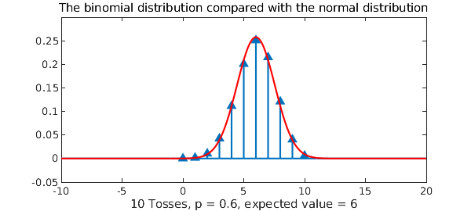

The Central Limit Theorem is one of the most striking results in the theory of probability. It says that if you take the mean of $n$ independent samples from almost any random variable, then as $n\to\infty$, the distribution of these means approaches a normal distribution, i.e., a Gaussian or bell curve. For example, if you toss a coin $n$ times, the number of heads you get is given by the binomial distribution, and this approaches a bell curve.
More specifically, let $X_1, \dots , X_n$ be independent samples from a distribution with mean $\mu$ and variance $\sigma^2<\infty$, and consider the sample mean
$$ S_n = n^{-1} \sum_{k=1}^n X_n . $$
The law of large numbers asserts that $S_n \to \mu$ as almost surely as $n\to\infty$. The Central Limit Theorem asserts that the random variables $\sqrt n (S_n-\mu)$ converge in distribution to the normal distribution $N(0,\sigma^2)$. Details are given in many textbooks of probability and statistics, such as [1].
The Chebfun conv command makes it possible to illustrate the Central Limit Theorem for general distributions, because the probability distribution associated with the sum of random variables is given by a convolution. For example, consider this triangular probability distribution:
X = chebfun({0,'(4/3+x)/2',0},[-3 -4/3 2/3 3]);
LW = 'linewidth'; lw = 1.6; ax = [-3 3 -.2 1.2];
hold off, plot(X,LW,lw,'jumpline','b'), axis(ax), grid on
FS = 'fontsize'; fs = 10;
title('Distribution of X',FS,fs)

$X$ has mean zero and variance $2/9$:
t = chebfun('t',[-3 3]);
mu = sum(t.*X)
variance = sum(t.^2.*X)
mu =
-1.665334536937735e-16
variance =
0.222222222222223
Let us superimpose on the plot the normal distribution of the same mean and variance:
sigma = sqrt(variance);
gauss = @(sigma) chebfun(@(t) exp(-.5*(t/sigma).^2)/(sigma*sqrt(2*pi)),[-3 3]);
hold on, plot(gauss(sigma),'r',LW,lw)
title('Distribution of X compared with normal distribution',FS,fs)

Here is the distribution for the sum of two copies of $X$, renormalized so that the variance is again $2/9$:
X2 = conv(X,X);
S2 = newDomain(sqrt(2)*X2,[-3,3]*sqrt(2));
hold off, plot(S2,LW,lw,'jumpline','b'), axis(ax), grid on
title('Renormalized distribution of (X+X)/2',FS,fs)
hold on, plot(gauss(sigma),'r',LW,lw)

And here we have the renormalized sum of three:
X3 = conv(X2,X);
S3 = newDomain(sqrt(3)*X3,[-3,3]*sqrt(3));
hold off, plot(S3,LW,lw,'jumpline','b'), axis(ax), grid on
title('Renormalized distribution of (X+X+X)/3',FS,fs)
hold on, plot(gauss(sigma),'r',LW,lw), hold off

Convolutions like these appear in another Chebfun Example, called "B-splines and convolutions" [2]. The only difference is that in that case we start with a uniform rather than triangular distribution.
Let's try a discrete random variable now. As alluded to in the opening paragraph, a binomial random variable is generated by performing so-called Bernoulli trials. Chebfun provides us the luxury of indulging in such experiments without the coins and their tosses. Consider a coin for which the probability of getting a head in a single toss is $p$. We can construct the probability density function (pdf) of this coin as a linear combination of two Dirac-delta impulses located at $x=0$ and $x=1$, respectively:
x = chebfun('x',[-1 2]);
p = .6; q = 1-p;
p1 = q*dirac(x-0)+p*dirac(x-1);
plot(p1), xlim([-0.1 1.1]);
title('Probability distribution for getting a head in a single toss',FS,fs)

Now, let $X$ be the random variable that counts the number of heads when this coin is tossed $n$ times, i.e. $$ X = X_1 + X_2 + \ldots + X_n, $$ where $X_k$ is a random variable representing the $k^{th}$ toss. In particular, $X_1, X_2, \ldots, X_n$ are identically distributed, independent random variables and take the values $0$ and $1$ with probabilities $1-p$ and $p$ respectively. The random variable $X$ thus generated is called a binomial random variable of order $n$ [1]. If we now take $n=2$, then $X=X_1+X_2$, and this corresponds to tossing the coin a second time. The pdf of $X$ is given by the convolution of the pdfs of $X_1$ and $X_2$ [1]. Since $X_1$ and $X_2$ are identical, we have
p2 = conv(p1,p1);
plot(p2), xlim([-.1 2.1])
title('Probability distribution for number of heads in two tosses',FS,fs)

We can verify that the probabilities add up to $1$.
sum(p2)
ans = 1.000000000000000
Every time we toss the coin again, the pdf of updated $X$ is given by convolving the old pdf of $X$ with the pdf of $X_1$. For $10$ coin tosses, the final distribution of $X$ is given by
n = 10;
pn = p2;
for k = 3:n
pn = conv(pn,p1);
end
plot(pn);
title('The binomial distribution',FS,fs)

Again the probabilities sum to $1$.
sum(pn)
ans = 0.999999999999998
The Central Limit Theorem says that as $n \to \infty$, the distribution of the binomial random variable $X$, converges to the normal distribution $N(np,npq)$ [1]. We can easily verify this fact. Let $\mu = np$ and $\sigma^2 = npq$:
mu = n*p % mean sigma = sqrt(n*p*q) % std
mu =
6
sigma =
1.549193338482967
The probability distribution function for the corresponding normal random variable is given by
fN = chebfun(@(x) 1/(sigma*sqrt(2*pi))*exp(-(x-mu).^2/(2*sigma.^2)), domain(pn));
We now plot this continuous distribution on top of the discrete one:
hold on
plot(fN,'r')
s = sprintf('%i Tosses, p = %2.1f, expected value = %i', n, p, n*p);
xlabel(s);
title('The binomial distribution compared with the normal distribution',FS,fs)

We see that even for the modest value $n=10$, the binomial distribution matches the normal distribution quite well.
Perhaps it is worth emphasizing that the computation we have just performed of discrete convolutions via Chebfun delta functions is extraordinarily inefficient. One doesn't need Chebfun to calculate a binomial distribution! The point of Chebfun is that it is a very general system that can treat much more complicated problems in the same format. The reader might enjoy exploring verifications of the Central Limit Theorem for distributions that combine discrete and continuous components.
References
-
Papoulis, A., Probability, Random Variables and Stochastic Processes, third edition, McGraw-Hill, 1991.
-
Chebfun Example approx/BSplineConv